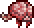
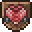

The Brain of Cthulhu is a large, flying brain with a mere 1,250 / 2,125 / 2,709 health, giving it the lowest amount of health out of any boss. It spawns once for every third Crimson Heart that is broken or immediately after a Bloody Spine is used. Crimson Hearts are found in the Crimson's chasms, surrounded by Crimstone, which can be bypassed with the same methods Ebonstone can. However, some of the pockets containing these will generate open. Once within range, Crimson Hearts can be destroyed with a Hammer or any tile-breaking explosive. It can only be summoned in the Crimson, but at any time of day. The Brain of Cthulhu has two forms. In the first form, the brain cannot be harmed, and Creepers will float around it. After all of these are killed, the Brain of Cthulhu will go into its second form, where it will teleport more frantically and move a lot faster, so a ranged weapon may be needed. The Brain of Cthulhu's second attack form is ramming, like the second form of Eye of Cthulhu. Unlike most other bosses, the Brain of Cthulhu is not immune to knockback. The Brain of Cthulhu is the only source of Tissue Samples in the game (other than the creepers spawned while fighting it), and drops a large amount of Crimtane Ore, which are their equivalents to the corruption items Shadow Scale and Demonite Ore respectively. In Expert Mode, the Brain of Cthulhu will have more health, and in its second phase, it will start creating illusions of itself to charge at the player. The lower the Brain of Cthulhu's HP gets, the illusions become much less obvious to the point where they will look exactly like the real Brain of Cthulhu. However, the minimap icon will still show the real Brain of Cthulhu, allowing players to bypass this.


HP:3250
DAMAGE:30
AI: floats around
 Crimtane Ore
Crimtane Ore
Bone Rattle
Brain of Cthulhu Mask
 Lesser Healing Potion
Lesser Healing Potion
Brain of Cthulhu Trophy
Dread Fang
 Tissue Sample
Tissue Sample